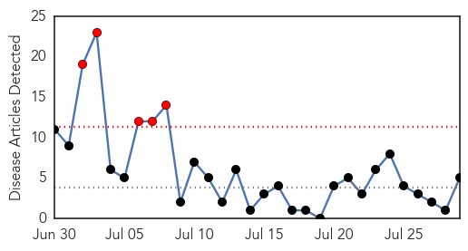

Measles
30-Day Web Trend
5 alerts, 0 warnings

30-Day Twitter Trend
0 alerts, 0 warnings

Article Locations

Article Confidences

Top Articles:
- 0.843
- Moment of Science — House of Vaxx: Science and the anti-vaccine movement
- 0.761
- 'Leaky vaccines' could spur more dangerous disease
- 0.747
- West and Central Africa Region Weekly Humanitarian Snapshot (21 - 27 July 2015) - Cameroon
- 0.741
- ‘Leaky’ vaccines may strengthen viruses
- 0.596
- 'Leaky' vaccines may strengthen viruses
Top Tweets:
-
No tweets found for Jul 29, 2015
Meningitis
30-Day Web Trend
0 alerts, 0 warnings

30-Day Twitter Trend
1 alerts, 0 warnings

Article Locations

Article Confidences

Top Articles:
Top Tweets:
-
No tweets found for Jul 29, 2015